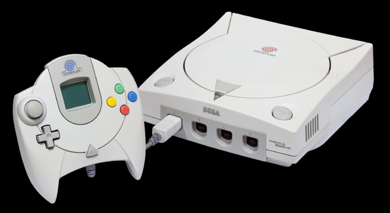
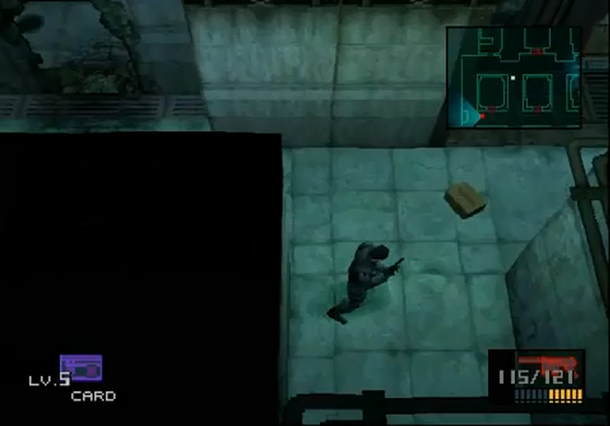
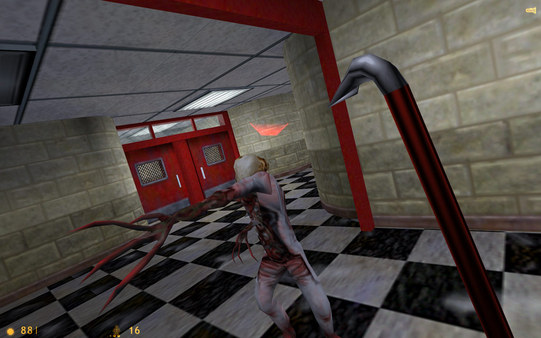

> Sega presenta su última consola: Dreamcast. Venía marcada por el fracaso de Saturn y la competencia sería muy dura más tarde con PlayStation 2, lo cual desembocó en el principio del fin de la compañía en el mercado de consolas.
Entre su catálogo de juegos hay que destacar:
Crazy Taxi, Shenmue, Sonic Adventure, Soul Calibur, o Virtua Tennis.
<
> Nintendo lanza la Game Boy Color, con mejor hardware, gráficos y velocidad que su antecesora. El éxito que tuvo esta consola tiene su punto clave en que era
compatible con todos los juegos de la Game Boy original.
<
>
Llega The Legend of Zelda: Ocarina of Time. Pocos juegos en la historia han significado lo que significó este juego en su época. Era el primer título en 3D de la saga y fue diseñado por Shigeru Miyamoto. Para muchos es el mejor juego de la historia. Revistas conocidas como Famitsu le concedieron la primera puntuación perfecta de la historia.
<

> Metal Gear Solid aparece en PlayStation desarrollado por Konami. Su creador, Hideo Kojima aprovechó todas
las posibilidades técnicas de la consola para crear el juego de espionaje y acción que siempre había soñado.
Hoy en día es una de las sagas más importantes en el mundo de los videojuegos, y un referente del genero del espionaje.
<
>
También sale el primer Gran Turismo de manos de Polyphony Digital y producido
por Kazuroni Yamauchi. Un juego basado en la simulación de la conducción, que nos introducía en el cuerpo de un conductor novel que tenía que ir sacando licencias para conseguir coches cada vez mejores.
<

>
Se estrena el mítico Half-Life, un FPS de ciencia ficción desarrollado por Valve Corporation.
Narraba las aventuras de Gordon Freeman, un cientifico teórico del Laboratorio de Materiales Anómalos de Black Mesa. La sofisticación de la Inteligencia Artificial (IA) y su larga duración, lo convirtió en un éxito de ventas y en uno de los mejores juegos del género hasta hoy.
<